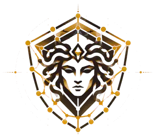
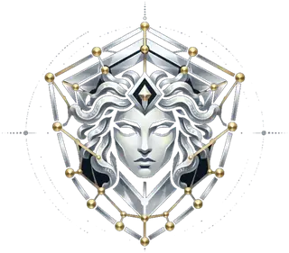
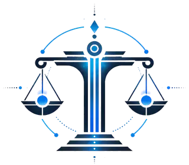

Kairos Foundation
Open tools for defenders, made with care.
Placeholder copy: one or two plain sentences on what the Foundation does and why. Concrete nouns and verbs; no fear, war metaphors or hype.
$ npx aegis-skills install --platform claude
MCP: registered "aegis"
✓ Claude Code: 24 skills installed
#1 Projects
Named for the old myths
-


LiveAegis
Athena's shield. An open library of defensive security skills for AI assistants.
-

In developmentThemis
The scales of order. A governed security-operations agent where a person approves every action.
-
Planned
Argus
The all-seeing watchman. Placeholder: no artwork or accent colour exists yet (see README, open decisions).
#2 Principles
Warm paper, quiet ink
OpenSource you can read, licences stated where they matter.
GovernedPeople approve what changes systems; the tools say what they do and do not do.
AccessibleWCAG 2.2 AA by construction: contrast, focus, reflow and reduced motion.
Read more in the design notes.